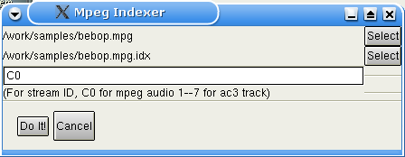
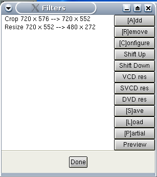
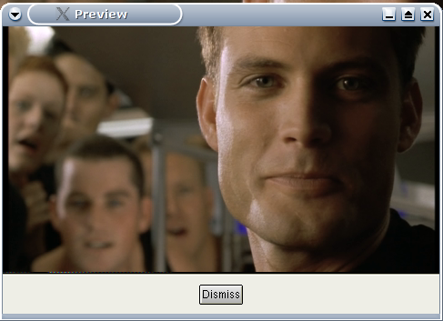

|
Пример конвертирования Mpeg в Divx 1.Подготовка Здесь описан пример перекодирования mpeg1 или 2 (DVD например) в AVI, используя xvid видео кодек и mp3 звук.Только mpeg видео (m1v and m2v) и mpeg-ps поддерживаются в Avidemux (mpg/vob). Поток должен быть с одним angle (точкой обзора), не шифрованный. Назовем его stream.mpg Если источник dvd, можно использовать Mplayer : mplayer -dvd 1 -dumpstream. Это создаст читаемый в avidemux vob из DVD. VDR файлы пока не поддерживатся. Avidemux не может читать mpeg поток непосредственно, прежде он должен прочитать индекс этого mpeg потока. Индекс mpeg потока это обычный текстовый файл описывающий mpeg и последовательность кадров. По структуре он схож с d2v из DVD2AVI. Этот индекс позволяет делать в avidemux случайный поиск с точностью до кадра. Чтобы создать индекс, необходимы следующие шаги:
 С индексами для mpeg все ясно. С полями id в потоках звука несколько запутанно.
2.Редактирование видео Некоторые DVD кодированы с fps 23.976 aka FILM (большинство). Други используют значение 29.97 (NSTC), soap например. В первом случае DVD проигрыватель конвертирует налету в NSTC format (telecine). Таким образом, в заголовках mpeg всегда указано значение 29.96 и это всегда будет конечным форматом. Avidemux использует mpeg2dec для декодирования mpeg потока (с небольшими изменениями). Mpeg2dec не выполняет telecine для FILM . Это означает, что avidemux не может определить разницу между FILM и NSTC. Если вы заметили все возрастающую рассинхронизацию видео и звука, используйте Video Processing->Change framerate и установите значение 23.976. Для mpeg в PAL проблем нет, они всегда имеют 25 fps. Теперь вы должны иметь что-то подобное : 
Время подобрать фильтры. CTRL+F выдаст список возможных. 
Мы будем использовать Crop фильтр для удаления черных бордюров. Если поток качественный, можете попробовать autoCrop кнопку. На примере бордюры очень небольшие. Они отображаются зеленым для наглядности. 
После обрезания, изменим размеры на что-нибудь меньшее. Не забывайте, что большинство DVD в формате 16/9, имейте это ввиду при изменении размеров. Откройте снова окно фильтров и выбирите resize . Изменим размер до 480x272, помня про 16/9, причем ширина должна быть кратна 16, а высота 8. В любое время вы можете изменить настройки фильтра щелкнув кнопку configure. Для оценки результата используйте кнопку preview или режим play с нажатой кнопкой output . Для информации, наша цепочка видео фильтров выглядит так:  В зависимости от исходного материала и поставленной цели вам могут понадобиться дополнительные фильтры (subtitling, denoiser, deinterlacer...). Читайте раздел video filters . Вы можете открыть окно предпросмотра и "прокручивать" видео в основном окне бегунком или "горячими" клавишами, предпросмотр так же будет обновляться. 3.Настройка кодирования Т.к. мы будем кодировать, нужно выставить режим process для видео. Выбраем кодек. Я предпочитаю Xvid и Lavcodec. Вы можете найти win-tutorial для Xvid, для lavcodec обратитесь к документации на mplayer. Divx версия для Linux очень отстает, поэтому не будем говорить об этом. Возьмем Xvid для нашего небольшого примера. Сначала определим файл журнала для второго прохода Video processing->Set log file Выбор меню Video processing->configure codec покажет этот диалог. 
Используем 2pass и введем конечный размер . Это рамер чистого видео без служебных заголоков avi, поэтому делайте 5% запас. Установим размер равным 600 и нажмем ok. 4.Установки звука Если используется звук, который был выбран при индексировании, ничего делать не надо. Можно использовать внешний звук через меню Audio-source. Если желаете сохранить звук "как есть", например сделать Xvid+AC3, то ничего не меняйте. Иначе установите audio в режим process и подключите (например) Normalize, 48->44. С деталями ознакомтесь здесь audio filters Процедура такая-же, как и для видео, выберите кодек, MP3 например, и настройте его Установим 128 kbps joint stereo, как здесь 
5.Сохранение Теперь выберите File->Save avi и ждите.... Готово. Avidemux выполнит первый проход, затем второй и перекодирует звук. 
|